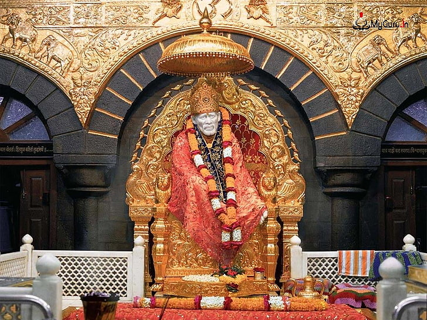

Shirdi, situated in the Ahmednagar district of Maharashtra, is renowned as the abode of Shirdi Sai Baba, a revered saint and spiritual master. The town attracts millions of devotees from various parts of the world who come to seek blessings and solace at the Sai Baba Temple, which houses the saint's tomb. Apart from the temple, Shirdi offers a tranquil atmosphere conducive to introspection and spiritual reflection. Visitors can explore the various ashrams, meditation centers, and museums dedicated to Sai Baba, gaining insights into his teachings and life philosophy.
When Lord Rama returned to Ayodhya after getting victory over Ravana, Hanumanji started living here. That is why it was named Hanumangarh or Hanuman Kot. It was from here that Hanumanji used to protect Ramkot. In the main temple, Pawansut sits on the lap of Mata Anjani.Located in Ayodhya, it is one of the most important temples in the city along with other temples like Nageshwar Nath and the under-construction Ram temple.
Kanak Bhawan is to the north-east of Ram Janam Bhumi, Ramkot, in Ayodhya. Kanak Bhawan is one of the finest and famous temples in Ayodhya and is a must visit. It is believed that this Bhawan was gifted to Devi Sita by Kaikei immediately after her marriage to Lord Ram. This is private palace of Devi Sita and Lord Rama. Vikramaditya got it renovated. Later it was rebuilt/renovated by Vrish Bhanu Kunwari which exists even today. The main idols installed in the garbhgrih (sanctum), are of Lord Ram and Devi Sita.
Contact us:xxxxxxxxx
Email:youme1211@gmail.com